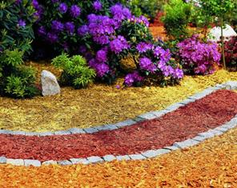
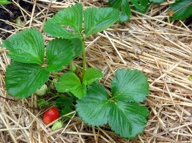
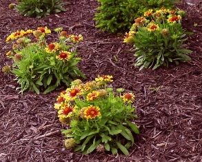

Все о мульчировании
Мульчирование почвы - очень важная составляющая ухода за садовыми растениями. По сути, это покрытие земли слоем органических (или неорганических) остатков. Существует масса различных технологий мульчирования, в которых используются разнообразные материалы. В общем, в этом деле есть множество тонкостей, и только соблюдение всех правил может гарантировать нужный эффект.
Зачем нужно мульчирование почвы?
Мульчирование растений выполняет множество полезных функций:
- сохраняет в земле влагу
- предотвращает образование эрозии и появление корки на почве
- сохраняет рыхлость земли, в связи с чем обработку нужно проводить гораздо реже
- в летнее время оно обеспечивает оптимальную температуру почвы, предотвращает перегревание верхнего слоя
- в осенний период мульча защищает землю от замерзания, выветривания и промывания
- уменьшает рост сорняков
- сокращает частоту поливов за счет уменьшения испарения влаги
- улучшает структуру почвы, что способствует росту корневой системы растений
- позволяет снизить количество вносимых удобрений
- создает благоприятную среду для микроорганизмов, способствующих разложению органических материалов. Таким образом, полезные вещества лучше усваиваются растениями.
Также существует декоративное мульчирование – некоторые садоводы создают целые композиции из мульчи. Применив немного фантазии, вы сможете облагородить свой участок и сделать даже «голый» осенний сад красивым и ярким.
Виды мульчи
Мульчу можно разделить на два больших класса – органический и неорганический. К органическим относятся:
- Садовый компост. Может состоять из различных материалов, в том числе: навоз, птичий помет, опавшая листва, сорняки и ботва, торф. Данный тип прекрасно подходит практически для всех садовых растений, он может использоваться для мульчирования и огурцов в теплице, и роз или лилий на клумбе.
- Скошенная трава. Ваш газон может послужить не только украшением сада, но и источником мульчи. Этим органическим материалом покрываются, как правило, однолетние растения (обратите внимание, что слой должен быть очень тонким), скошенная трава также используется для мульчирования газона. При использовании травы необходимо следовать нескольким правилам: слой необходимо периодически ворошить, чтобы он не становился плотным и воздухонепроницаемым; нельзя использовать в качестве мульчи траву, которая подвергалась обработке гербицидом; нежелательно оставлять мульчу на период затяжных дождей – трава начнет гнить, это может вызвать грибковые заболевания растений; как минимум три раза за сезон мульчу нужно удалять с газона, затем «причесывать» его граблями. Желательно засыпать газон не просто скошенной травой, а измельченной (во многих современных моделях газонокосилок предусмотрена функция мульчирования – специальный механизм перерабатывает скошенную траву и выбрасывает ее на поверхность).
- Солома. Разлагается гораздо медленнее, по сравнению с другими типами. Солома не рекомендуется для сеянцев, так как в ней содержаться ингибиторы, которые негативно влияют на растения, находящиеся в стадии активного роста. Используется преимущественно для мульчирования клубники, томатов, моркови и других овощных культур. Солома имеет некоторые недостатки: в ней могут содержаться семена сорняков, а в осенний период на нее могут позариться мыши.
- Опавшие листья. Они очень быстро разлагаются, что, несомненно, большой плюс. Здесь стоит обратить внимание, что листья могут использоваться только для деревьев или кустарников (к примеру, они прекрасно подойдут для мульчирования смородины, крыжовника или яблони), но не для овощных культур. Также следует отметить, что листья могут сыграть негативную роль в условиях мягкой или влажной зимы – такой климат способствует развитию грибных заболеваний.
- Навоз. Довольно часто используется для мульчирования грядок, как правило, смешивается с другими материалами. Нежелательно мульчировать зимой.
- Кора хвойных деревьев и древесная щепа. Создает ухоженный вид, долго сохраняется, содержит мико-ризу, очень полезную для растений. Может использоваться только для деревьев и кустарников, а также растений, для которых полезна кислая почвенная реакция. В случае с овощными культурами такая мульча может «перекрыть» растениям азот.
- Хвоя. Так же, как и кора, повышает кислотность почвы. Как правило, необходимо смешивание с золой.
- Опилки. Мульчирование опилками в чистом виде не рекомендуется, их обычно смешивают с компостом, навозом или удобрениями. Дело в том, что этот материал снижает уровень азота в почве, что негативно влияет на рост растений.
- Скорлупа кедровых орехов. С одной стороны, этот материал долговечен и имеет привлекательный внешний вид, но с другой стороны это лакомый кусочек для грызунов.
Неорганическая мульча:
- ПЭТ пленка. В последнее время все чаще используется для мульчирования картофеля, помидоров и других овощей, а также земляники и клубники. Пленка эффективно борется с сорняками, способствует подогреву почвы (что полезно весной и осенью). Желательно использовать вместе с соломой. При покупке пленки обратите внимание, чтобы пленка стойко переносила воздействие прямых солнечных и микроорганизмов, содержащихся в почве. Также нежелательно использовать ее в жаркую погоду – так создается парниковый эффект, и, как следствие, существенно повышается температура почвы.
- Бумага. Используется только в совокупности с другой мульчей, в противном случае она будет вытягивать влагу из земли. Бумагу нужно подкладывать под органическую мульчу, это предотвращает прорастание сорняков.
- Гравий, щебень. Используется в декоративных целях, эффектно смотрится на цветочных клумбах. Однако, между камнями могут прорастать сорняки, и удалять их довольно неудобно.
Готовим мульчу
В качестве агрегата для приготовления мульчи прекрасно подойдет газонокосилка – скошенная трава, как уже говорилось ранее, может использоваться для ухода за растениями. Желательно, чтобы в комплекте с газонокосилкой шла насадка для мульчирования, состоящая из острых ножей, измельчающих траву. Многие современные модели изначально оснащаются этой насадкой (она встроена внутрь корпуса), и приобретать ее дополнительно нет необходимости. Однако, стоит заметить, что мульчирование в газонокосилке – функция второстепенная, поэтому при покупке обязательно обратите внимание на ее наличие. Конечно, модели, оснащенные дополнительными возможностями, будут стоить несколько дороже, но в большинстве случаев это стоит того.
Для изготовления мульчи из коры, хвои, опавших листьев или соломы, рекомендуем использовать садовый измельчитель – он позволит быстро и эффективно переработать отходы различной твердости.
Технология мульчирования
Наиболее оптимальное время для мульчирования – май-начало июня, когда почва уже хорошо прогрета. Землю предварительно необходимо очистить от сорняков, мусора и листвы. Перед мульчированием почву обязательно нужно полить – если вы нанесете мульчу на сухую землю, вода будет тяжело поступать к корням растений.
Толщина нанесения зависит от используемого материала: если он плотный (кора или опилки), оптимальный слой не более 5 см, если же более легкий (листья, хвоя) – 7-8 см. Радиус покрытия зависит от типа растения, к примеру, кустарники мульчируют в радиусе 40-50 см, деревья – 70-90 см. Обратите внимание, что мульча не должна доходить до ствола или стебля, иначе растение начнет гнить. Соблюдение всех этих правил позволит вам повысить их урожайность, сделать свой сад здоровым и красивым.